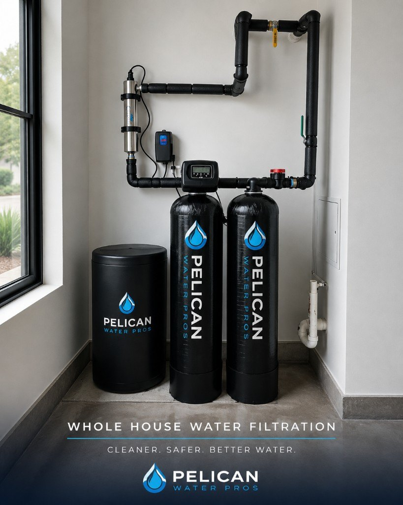

Efficient Water Softener Systems in Baton Rouge, LA
Pelican Water Pros installs water softener systems for Baton Rouge homeowners dealing with hard water, scale buildup, soap residue, and appliance wear. Proper softening helps improve washing, bathing, and cleaning results while reducing mineral-related stress on plumbing fixtures and water-using equipment throughout the home for more comfortable daily water use.

Softer water, simpler upkeep
Pelican Water Pros Delivers Efficient Water Softener Systems in Baton Rouge, LA That Fit Real Household Needs
- Careful Sizing for Better Results: Pelican Water Pros reviews household water use, fixture count, and hardness concerns before recommending equipment. That detail-focused approach helps prevent undersized or oversized systems, which matters for Baton Rouge homes where frequent laundry, multiple bathrooms, and daily shower use can quickly expose poor softener performance.
- Installation That Respects Your Schedule: Pelican Water Pros coordinates softener placement around existing plumbing access, garage layouts, and utility room space to keep the process manageable. For busy households juggling workdays, school pickups, and home maintenance, that convenience-focused planning reduces disruption while keeping the installation organized from start to finish.
- Dependable Protection for Plumbing and Appliances: Pelican Water Pros installs water softener systems in Baton Rouge, LA to help limit scale buildup on faucets, water heaters, and dishwashers. In real-world scenarios where hard water leaves spots on glassware or crust around showerheads, Pelican Water Pros focuses on reliable performance that supports cleaner fixtures and steadier long-term use.
Hard water affects homes
Why Efficient Water Softener Systems in Baton Rouge, LA Matter for Cleaner, Easier Daily Living
- Hard Water Changes Everyday Cleaning: Mineral-heavy water can make soap harder to rinse, leave film on shower doors, and create spots on dishes and faucets. Over time, those issues turn simple cleaning tasks into recurring frustrations, especially in homes where bathrooms and kitchens see constant daily use.
- Local Water Conditions Can Influence Comfort: In Baton Rouge, LA, households dealing with hard water often notice rough-feeling laundry, residue on fixtures, and reduced lather during bathing. Softening helps improve how water behaves throughout the house, making common routines feel smoother while reducing the visible effects minerals leave behind.
- Move-In and Remodel Readiness Matter: When a home is being prepared for new occupants or updated after a kitchen or bath renovation, untreated hard water can quickly affect fresh fixtures and new appliances. Installing softening equipment early helps protect those improvements and makes the property more ready for regular everyday use.

FREQUENTLY ASKED ・ ANSWERS TO YOUR QUESTIONS
Frequently Asked Questions About Water Softener Systems in Baton Rouge, LA
Do Water Softener Systems in Baton Rouge, LA make sense for townhomes with limited utility space?
Yes, many softening setups can be selected to fit tighter utility areas, as long as plumbing access, drain options, and maintenance clearance are considered. Pelican Water Pros evaluates available space, installation layout, and household demand to help townhome owners find a practical softening solution.
What areas of a house do Water Softener Systems in Baton Rouge, LA usually protect besides bathroom fixtures?
Softened water can benefit water heaters, dishwashers, washing machines, kitchen faucets, and other plumbing components affected by mineral scale and soap interaction. Pelican Water Pros explains how treatment connects to whole-home plumbing so property owners understand where softer water can make the biggest difference.
What should homeowners expect to notice first after installing Water Softener Systems in Baton Rouge, LA?
Many homeowners first notice reduced spotting on dishes, smoother-feeling water during showers, and less mineral residue forming around faucets and showerheads. Pelican Water Pros helps set realistic expectations, reviews normal system operation, and explains what changes may appear gradually as plumbing surfaces experience softer water.
SERVICE AREA
Find Us
Pelican Water Pros provides water softener system installation throughout Baton Rouge for homes dealing with hard water, mineral buildup, and soap residue. From established neighborhoods to newer residential developments, Pelican Water Pros helps property owners improve daily water use with softening solutions designed around plumbing layout, household demand, and long-term fixture protection.